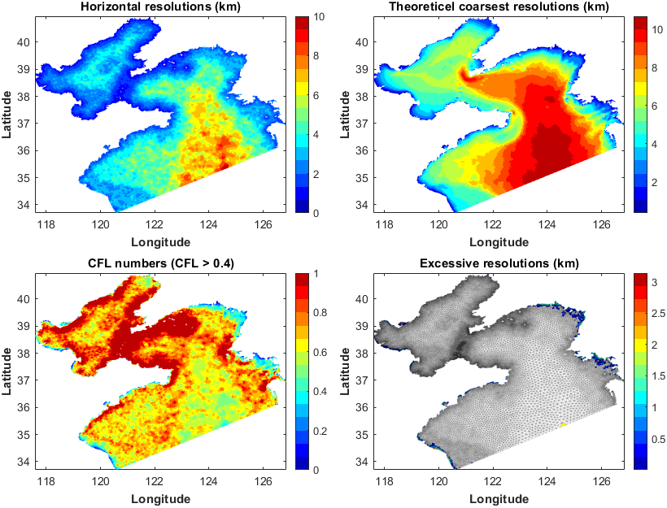
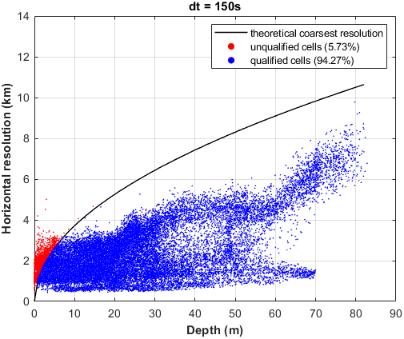
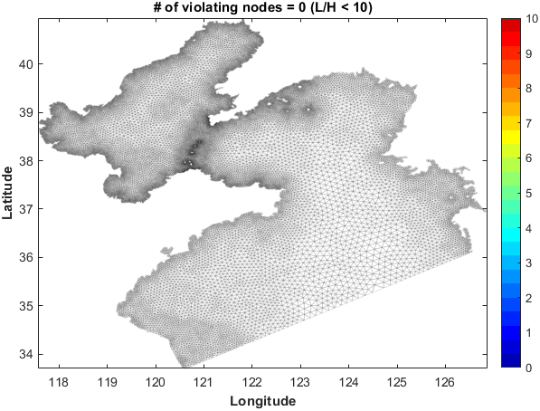

SCHISM-toolbox (v1.0-beta)
This is a MATLAB toolbox desgined for the Semi-implicit Cross-scale Hydroscience Integrated System Model (SCHISM).
Last updated on 24 Nov. 2023 by Wenfan Wu, COAS, Ocean University of China
Prerequisites
MATLAB Version: 2014b and above
Official Add-Ons (Mandatory):Image Processing Toolbox (drawpolygon, drawline);Mapping Toolbox (ispolycw, distance)
Public packages (Recommended):OceanMesh2D M_Map T_TIDE
Notes: OceanMesh2D is required only if you are using the 'mesh2schism.m' function. M_MAP is only used in calc_schism_circum.m; T_TIDE is only used in add_elevtide.m
Workflow
The following shows the complete workflow to genearte input files with this toolbox. Refer to the first example (Exp1_BYS.m) in the toolbox for more details.
Step-1: Load the mesh grid
This part aims to load the mesh grid generated from OceanMesh2D, then all the grid info. will be stored in a datastruct named 'Mobj' (viz. mesh object).
clc;clearvars
mesh_file = 'Exp2_BYS_CoSiNE\inputs\BYS_20814.mat'; % NEED TO BE CHANGED
Mobj = mesh2schism(mesh_file);
Mobj.expname = 'Exp1_BYS';
Mobj.time = (datetime(2020,6,1):hours(1):datetime(2020,6,10))';
Mobj.rundays = days(Mobj.time(end)-Mobj.time(1)+1);
Mobj.dt = 150; % dt (secs), the same as in param.nml
Mobj.coord = 'geographic'; % geographic or Cartesian coordinateAll input files generated afterwards will be placed in the directory where the mesh_file is located;
If your mesh grid is generated from the other softwares (e.g. SMS), just use the 'read_schism_hgrid' function to create the 'Mobj' datastruct, and the remaining workflow is the same. Refer to Exp3_CORIE_LSC2.m for more details.
Step-2: Activated modules
This part aims to decide the activated modules in your simulation.
Mobj = call_schism_tracers(Mobj);In this example, only hydrodynamic module is activated and thus there are only two activated tracers (temp & salt).
Step-3: Horitonzal grids
This part aims to visualize the horizontal grids and generate hgrid.gr3 and hgrid.ll files.
figure('Color', 'w') % see Figure 1
disp_schism_hgrid(Mobj, [1 0])
axis image
hold on
plot_schism_bnds(Mobj, [1 1], 'Color', 'k')
% write the hgrid.gr3 and hgrid.ll files
write_schism_hgrid(Mobj)Figure 1. Model domain and mesh grid.
Step-4: Check the grid quality
This part aims to check the inverse CFL constraints and hydrostatic assumption.
% check the invese CFL constraints
check_schism_metrics(Mobj);
% display the Max. acceptable resolutions as a function of water depth
calc_schism_CFL(Mobj)
% check the hydrostatic assumption
check_schism_hydrostatic(Mobj);For more details about the grid quality, please refer to the SCHISM manual.
Figure 2. Check the consistency of SST in the initial fields and the boundary inputs.
Figure 3. The Max. acceptable resolutions as a function of water depth .
Figure 4. The nodes that violate the hydrostatic assumption.
Step-5: Vertical grids
This part aims to generate the vertical grids (vgrid.in), and check the quality at a given transect.
% option-1: LSC2 coordinates
dep_edges = [10, 20, 30, 45, 55, 65, 75, 90];
dep_nums = [20 21 22 23 24 25 27 28];
Mobj = gen_schism_LSC2(Mobj, dep_edges, dep_nums, [4 5 3 5], 0.25);
% option-2: SZ coordinates
s_consts = [10, 0.7, 5, 20];
zcors = 20:2:(fix(max(Mobj.depth))+10);
Mobj = gen_schism_SZ(Mobj, s_consts, zcors);
% check the quality of vertical grids
% draw a line on the map and press ENTER
figure('Color', 'w')
disp_schism_hgrid(Mobj, [1 0], 'EdgeAlpha', 0.05, 'LineWidth', 0.5);
auto_center
SectNodes = def_schism_transect(Mobj, -1, 0.01);
% display the vertical layers on your selected transect
disp_schism_vgrid(Mobj, SectNodes)
% Write the vgrid.in file.
write_schism_vgrid(Mobj, 'v5.10');The format of vgrid.in has changed since v5.10, and thus you need to specify the version number here (v5.10 or v5.9). v5.10 is default.
Draw a line on the map and press ENTER, this part will return the vertical layers of selected transect. The function def_schism_transet.m provides a variety of methods to define the transect (e.g. straight line, dashed line, single points), see the usage of this function for more details.


Figure 5. (left) The selected transect; (right) vertical layers along the transect.
Step-6: River inputs@Element sources
This part aims to add river inputs in the form of element sources (e.g. source.nc).
SS = def_schism_source(Mobj, [1 0], 'load', 'on');
river_info = match_rivers(SS.source.lonc, SS.source.latc, SS.source.elems);
river_info = add_river_runoff(river_info, Mobj.time, 'real_time');
tracer_list = {'temp', 'salt'};
river_info = add_river_tracer(river_info, tracer_list, 'real_time');
D = prep_river_source(river_info, tracer_list);
write_schism_source_nc(Mobj, D, tracer_list)Left-click the points at the center of elements to select river sources, and press SHIFT to select multiple points simultaneously. The selected river sources will be saved as a MAT file named source_sink.mat.
Two things should be done before preparing your own application.
prepare your own example_river_data.mat file according to your needs.
add corresponding rivers in the match_rivers.m function.
River can also be added in the form of open boundaries but it is not supported in this toolbox so far.
Step-7: Initial Conditions
This part aims to prepare the inital fields (e.g. elev.ic, temp.ic, and hotstart.nc).
% DS contains the original initial fields with a fixed format:
% 1) 'lon', 'lat', 'depth' vectors must be in ascending order;
% 2) 'depth' vector must be positive; and ensure the range of lon/lat covers you model domain
% 3) 'var' must in the dimension of lon*lat or lon*lat*depth above.
DS = prep_schism_init(Mobj, 'hycom_bys');
varList = {'ssh', 'temp', 'salt'}; % it can be changed if you only want to interpolate for partial variables.
InitCnd = interp_schism_init(Mobj, DS, varList);
% check the interpolation
check_schism_init(Mobj, DS, InitCnd, 'temp')
% option-1: space-varying but vertically uniform initial field (temp.ic&salt.ic)
write_schism_ic(Mobj, 'elev', InitCnd.ssh)
write_schism_ic(Mobj, 'temp', InitCnd.temp(:,1))
write_schism_ic(Mobj, 'salt', InitCnd.salt(:,1))
% option-2: 3D initial fields (hotstart.nc)
start_time = Mobj.time(1);
Hotstart = write_schism_hotstart(Mobj, InitCnd, start_time);prep_schism_init.m is a simple packing function, and thus you can easily add more data sources in it according to your needs. Just make sure the format of DS meets the requirements given above.

Figure 1. Check the surface and bottom temperature interpolation in the initial field.
Step-8: Boundary Conditions
This part aims to prepare the boundary inputs (e.g. elev2d.th.nc, TEM_3D.th.nc).
% option-1: prepare real-time boundary inputs using hycom data.
DS = prep_schism_bdry(Mobj, 'hycom_bys');
% option-2: prepare monthly clim. boundary inputs using hycom data.
DS = prep_schism_bdry(Mobj, 'hycom_clim');
BdryCnd = interp_schism_bdry(Mobj, DS);
write_schism_th_nc(Mobj, BdryCnd, 'elev2D')
write_schism_th_nc(Mobj, BdryCnd, 'TEM_3D')
write_schism_th_nc(Mobj, BdryCnd, 'SAL_3D')
write_schism_th_nc(Mobj, BdryCnd, 'uv3D')
% check the temperature interpolation at the begining
check_schism_bdry(Mobj, DS, BdryCnd, 'temp', 1)
% check the consistency between initial fields and boundary inputs
check_schism_icbc(Mobj, 'temp', Mobj.maxLev)
Figure 2. Check the temperature interpolation along the open boundary at the begining.

Figure 3. Check the consistency of SST in the initial fields and the boundary inputs.
Step-9: Tide forcing
This part aims to prepare tidal forcing at the open boundary (e.g. bctides.in).
% extract tidal forcing
tideList = {'S2','M2','N2','K2', 'K1','P1','O1','Q1'};
TideForc = get_fes2014_tide(Mobj, tideList);
% kill the potential NaN values adjacent to the coast
field_list = fieldnames(TideForc);
for ii = 2:numel(field_list)
tide_var = field_list{ii};
TideForc.(tide_var) = fillmissing(TideForc.(tide_var), 'previous', 1);
end
TideForc = add_nodal_factors(Mobj, TideForc);
TideForc.cutoff_depth = 10;
bc_flags = [5 5 4 4];
TideForc.nf_temp = 0.8;
TideForc.nf_salt = 0.8;
write_schism_bctides(Mobj, TideForc, bc_flags)Download the fes2014 tidal products first, and change the directory in the function get_fes2014_tide.m(Lines 40-42).
It is easy to create another function if you want to change tidal products, just make sure the returned TidaForc has the same format for the fields inside.
Step-10: Bottom friction (drag.gr3, rough.gr3, and manning.gr3 )
This part aims to prepare the input files related to bottom friction (e.g. drag.gr3).
% Type-1: roughness
z0 = 0.001; % set constant roughness in the model domain
write_schism_gr3(Mobj, 'rough', z0)
% Type-2: drag
Cd = calc_schism_bfric(Mobj, 1, [0.07 3], 'on');
write_schism_gr3(Mobj, 'drag', Cd)
% Type-3: manning
fmc = 0.025;
write_schism_gr3(Mobj, 'rough', fmc)The function write_schism_gr3.m makes it easy to generate all the input files ending in 'gr3'.
Step-11: Misc. files ending in gr3 (e.g. shapiro.gr3, albedo.gr3)
% shapiro.gr3
shapiro_val = gen_slope_filter2(Mobj, [0.001, 0.05], 0.5, 'on');
write_schism_gr3(Mobj, 'shapiro', shapiro_val)
% windrot_geo2proj.gr3
write_schism_gr3(Mobj, 'windrot_geo2proj', 0)
% albedo.gr3
albedo_val = calc_schism_albedo(Mobj, 1, 'on');
write_schism_gr3(Mobj, 'albedo', albedo_val)
% watertype.gr3
wtypes = 5;
write_schism_gr3(Mobj, 'watertype', wtypes)
% diffmax.gr3 & diffmin.gr3
write_schism_gr3(Mobj, 'diffmax', 1)
write_schism_gr3(Mobj, 'diffmin', 1.0e-6)
% bdef.gr3
bdef_factor = zeros(size(Mobj.depth));
bdef_factor(Mobj.depth<5) = -2;
write_schism_gr3(Mobj, 'bdef', bdef_factor)
% hdif.gr3
hdif = calc_schism_hdif(Mobj, 0.25, 5e-5, 'on');
write_schism_gr3(Mobj, 'hdif', hdif)Step-12: Misc. files ending in prop (e.g. tvd.prop, fluxflag.prop)
tvd_flags = ones(Mobj.nElems, 1);
tvd_flags(Mobj.depthc<5) = 0;
write_schism_prop(Mobj, 'tvd', tvd_flags)
flux_flags = def_schism_fluxflag(Mobj, 2);
write_schism_prop(Mobj, 'fluxflag', flux_flags)The function write_schism_prop.m makes it easy to generate all the input files ending in 'prop'.
Step-13: Atmospheric forcing
% AtmForc inculdes the extracted atmospheric forcing data with a fixed format:
% 1) lon/lat matrix (nLons*nLats) are generated from the meshgrid function, and in ascending order
% 2) variable matrix should be of nLons*nLats*nTimes
% 3) the 'region' and 'time' fields must cover your simulation period, model domain, respectively.
nFiles = 5;
load('test_era5_AtmForc.mat')
write_schism_sflux(AtmForc, 'prc', nFiles)
write_schism_sflux(AtmForc, 'rad', nFiles)
write_schism_sflux(AtmForc, 'air', nFiles)nFiles is the estimated # of sflux_prc/air/rad_*.nc files. Note that the nFiles can not be two small, since the time_steps of each sflux nc file can not exceed 1000 by default. In addition, write_schism_sflux.m will slightly adjust this value to ensure that each file starts at 0 o'clock in certain day, since the 'hour' component of 'base_date' property is unused in each nc file.
Considering that the raw data of atmospheric forcing is too large, this toolbox did not offer the function to create 'AtmForc' according to the raw data, but directly uploads the result.
You need to prepare the AtmForc variable according to the required format, and then use 'write_schism_sflux.m' to create the nc files.
Notes
This toolbox was written with reference to the fvcom-toolbox developed by Dr. Cazenave.
Limitations (To-do List)
- only for purely triangular grid so far, although SCHISM supports mixed triangular/quadrangular grid.
- only for geographical grids so far.
- primarily for the input files related to hydrological part, while the other modules such as CoSiNE, ICM are not supported. However, the toolbox has reserved interfaces for additional modules.
- the river can only be added as source points, although the river can also be added as boudary inflow in SCHISM.
Copyright
This toolbox is distributed under the MIT license. It is free to use and no profit making is allowed.
If you encounter any problems/bugs when using this toolbox, or if you have any suggestions, please contact wenfanwu@stu.ouc.edu.cn